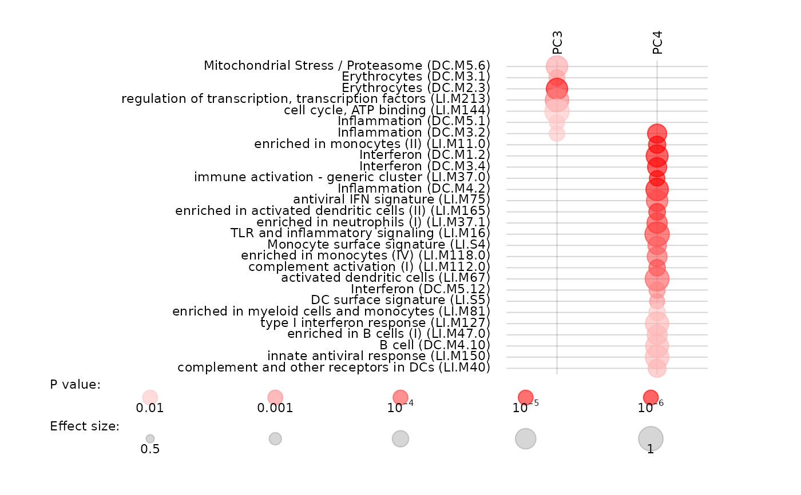

Plot a summary of multiple tmod analyses
tmodPanelPlot.RdPlot a summary of multiple tmod analyses
Usage
tmodPanelPlot(
x,
pie = NULL,
clust = "qval",
select = NULL,
filter.empty.cols = FALSE,
filter.empty.rows = TRUE,
filter.unknown = TRUE,
filter.rows.pval = 0.05,
filter.rows.auc = 0.5,
filter.by.id = NULL,
col.labels = NULL,
col.labels.style = "top",
row.labels = NULL,
row.labels.auto = "both",
pval.thr = 10^-2,
pval.thr.lower = 10^-6,
plot.func = NULL,
grid = "at",
pie.colors = c("#0000FF", "#cccccc", "#FF0000"),
plot.cex = 1,
text.cex = 1,
pie.style = "auto",
min.e = 0.5,
max.e = 1,
legend.style = "auto",
...
)Arguments
- x
either a list, in which each element has been generated with a tmod test function, or the result of the tmodSummary function
- pie
a list of data frames with information for drawing a pie chart
- clust
whether, in the resulting data frame, the modules should be ordered by clustering them with either q-values ("qval") or the effect size ("effect"). If "sort" or NULL, the modules are sorted alphabetically by their ID. If "keep", then the order of the modules is kept.
- select
a character vector of module IDs to show. If clust == "keep", then in that particular order.
- filter.empty.cols
If TRUE, all elements (columns) with no enrichment below pval.thr in any row will be removed
- filter.empty.rows
If TRUE, all modules (rows) with no enrichment below pval.thr in any column will be removed
- filter.unknown
If TRUE, modules with no annotation will be omitted
- filter.rows.pval
Rows in which no p value is below this threshold will be omitted
- filter.rows.auc
Rows in which no AUC value is above this threshold will be omitted
- filter.by.id
if provided, show only modules with IDs in this character vector
- col.labels
Labels for the columns. If NULL, names of the elements of the list x will be used.
- col.labels.style
Style of column names: "top" (default), "bottom", "both", "none"
- row.labels
Labels for the modules. This must be a named vector, with module IDs as vector names. If NULL, module titles from the analyses results will be used.
- row.labels.auto
Automatic generation of row labels from module data: "both" or "auto" (default, ID and title), "id" (only ID), "title" (only title), "none" (no row label)
- pval.thr
Results with p-value above pval.thr will not be shown
- pval.thr.lower
Results with p-value below pval.thr.lower will look identical on the plot
- plot.func
Optionally, a function to be used to draw the dots. See "pvalEffectPlot"
- grid
Style of a light-grey grid to be plotted; can be "none", "at" and "between"
- pie.colors
character vector of length equal to the cardinality of the third dimension of the pie argument. By default: blue, grey and red.
- plot.cex
a numerical value giving the amount by which the plot symbols will be maginfied
- text.cex
a numerical value giving the amount by which the plot text will be magnified, or a vector containing three cex values for row labels, column labels and legend, respectively
- pie.style
Can be "auto" (default), "dot", "symdot", "pie", "boxpie", "rug" (see Details)
- min.e, max.e
scale limits for the effect size (default: 0.5 and 1.0)
- legend.style
Style of the legend: "auto" -- automatic; "broad": pval legend side by side with effect size legend; "tall": effect size legend above pval legend
- ...
Any further arguments will be passed to the pvalEffectPlot function (for example, grid.color)
Value
a data frame with a line for each module encountered anywhere in the list x, two columns describing the module (ID and module title), and two columns(effect size and q value) for each element of list x.
Details
This function is useful if you run an analysis for several conditions or time points and would like to summarize the information on a plot. You can use lapply() to generate a list with tmod results and use tmodPanelPlot to visualize it.
tmodPanelPlot shows a heatmap-like plot. Each row corresponds to one module, and columns correspond to the time points or conditions for which the tmod analyses were run. Each significantly enriched module is shown as a red dot. Size of the dot corresponds to the effect size (for example, AUC in the CERNO test), and intensity of the color corresponds to the q-value.
By default, tmodPanelPlot visualizes each the results of a single statistical test by a red dot, or blue and red dots if the effect sizes are both negative and positive. However, it is often interesting to know how many of the genes in a module are significantly up- or down regulated. tmodPanelPlot can draw a pie chart based on the optional argument "pie". The argument must be a list of length equal to the length of x. Note also that the names of the pie list must be equal to the names of x. Objects returned by the function tmodDecideTests can be directly used here. The rownames of either the data frame or the array must be the module IDs.
Examples
data(Egambia)
E <- Egambia[,-c(1:3)]
pca <- prcomp(t(E), scale.=TRUE)
# Calculate enrichment for first 5 PCs
gs <- Egambia$GENE_SYMBOL
gn.f <- function(r) {
o <- order(abs(r), decreasing=TRUE)
tmodCERNOtest(gs[o],
qval=0.01)
}
x <- apply(pca$rotation[,3:4], 2, gn.f)
tmodPanelPlot(x, text.cex=0.7)
